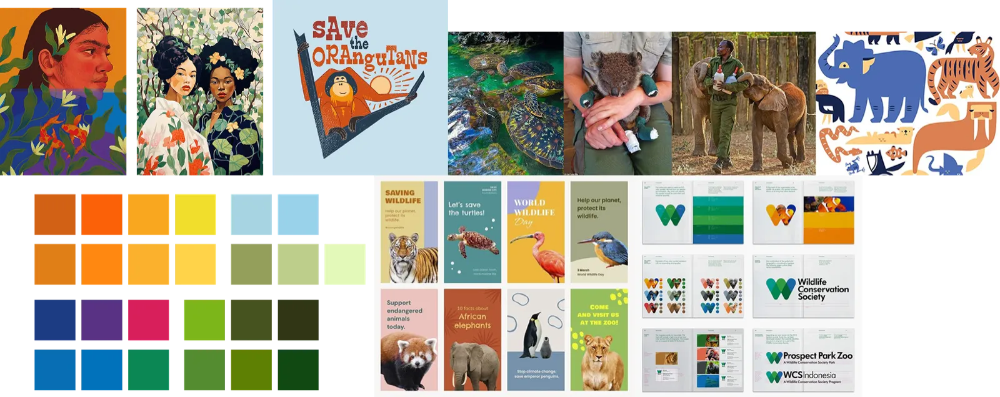
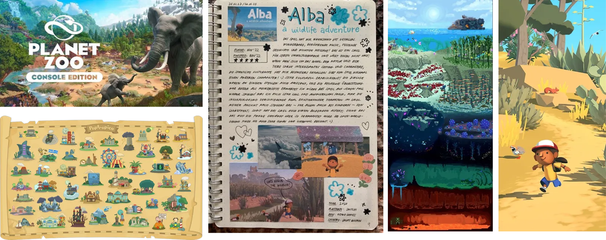
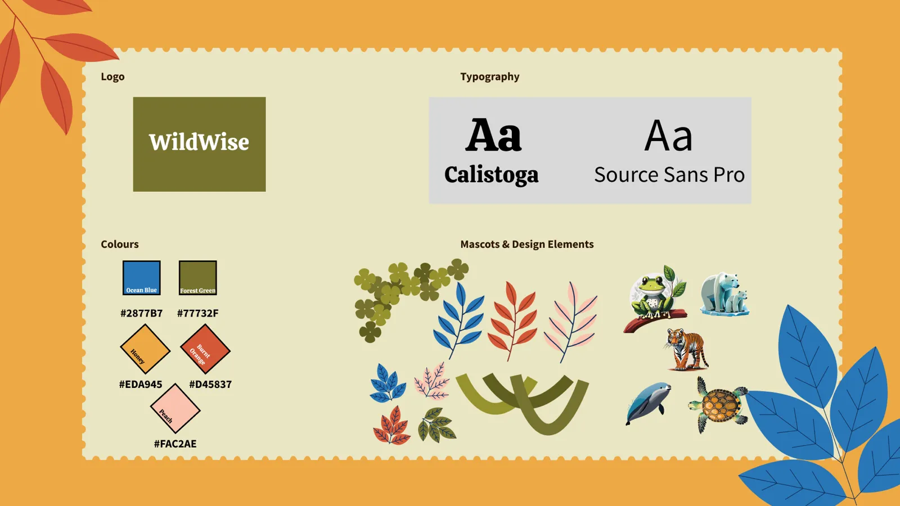
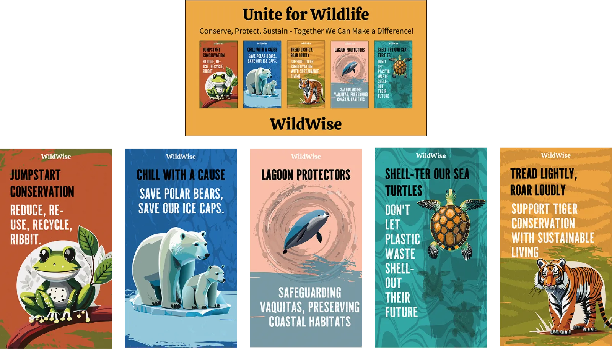
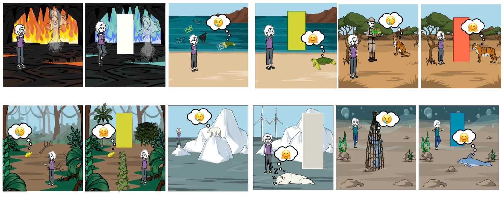

Brand identity · social campaign · game concept
WildWise
A youth brand that teaches 13–16-year-olds about animal conservation. Teenagers want to help but rarely learn about it at school, so WildWise uses short social posts, posters and a game concept to make it approachable.

Teens want to help but don't know how
Recent studies show that 13–16-year-olds want to help with conservation but don't learn about it in school, so they're unsure how to contribute. There's a gap: the motivation is there, but accessible, engaging resources aren't.
WildWise aims to make conservation fun and accessible by:
Bite-sized content
Short social media posts that teach one thing at a time.
Interactive games
A game that teaches conservation through play.
Small actions
Clear, small steps teens can actually take.
Research and mood boards
I ran surveys and a competitor analysis to understand what resonates with teenagers. Minimalist, mascot-driven ads performed best, such as WWF's panda. I then built mood boards drawing on:
- Nature documentaries (Our Planet).
- Youth-focused apps (TikTok, Duolingo).
- Successful conservation campaigns (WWF, Nat Geo).


Brand identity
Name and logo
I chose WildWise because it's memorable and sounds educational. The logo is text-only so it works on every platform.
Typography
- Calistoga for headings: organic and natural.
- Source Sans Pro for body text: easy to read in content-heavy posts.
Why these colours?
Each colour stands for a different ecosystem or cause. I wanted them to look good together and carry meaning, and I avoided relying only on blues and greens so the palette covers more habitats.

Social media and posters
Ad and poster strategy
- Minimal text: one key fact per post.
- Mascots: an animal illustration is always the focal point.
- Taglines: short phrases such as "Save the Bees, Save the Future".
🐝 Save the Bees
Visual: a cartoon bee on a gradient honeycomb background.
Text: "Did you know? 1 in 3 bites of food depends on bees. #WildWise"

Digital ad campaign


A tap-to-rescue game
I proposed a tap-to-rescue mobile game where players complete challenges, like replanting trees or cleaning oceans, and unlock real-world conservation facts. I designed storyboard wireframes to plan the gameplay flow.

Design challenges
Making conservation "cool"
I used vibrant colours and playful mascots to avoid a textbook feel, and added gamification like badges and shareable achievements.
Information overload in ads
Each post carries one key stat and a clear call to action: "Learn more at WildWise.org".
Outcome and next steps
Final feedback: Frog Design praised the consistent branding and the youth-friendly approach.
Next steps
- Build a prototype of the game in Unity or Unreal Engine.
- Expand the social campaigns through collaborations with influencers.